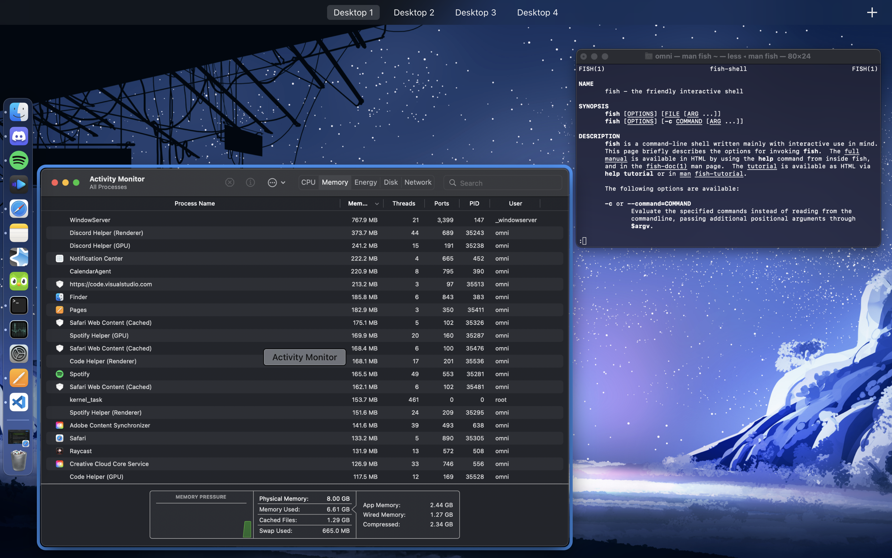

ENTRY 8/20/23
A Linux-user tries MacOS
tldr: somehow I actually really enjoyed it... mostly...
Preface
 For some context I’ve been a linux-user for about 4 years now, most of which under a heavily customized i3 setup. I’m not coming from GNOME or KDE or any other DE, this trial was a massive paradigm shift for me in multiple ways.
For some context I’ve been a linux-user for about 4 years now, most of which under a heavily customized i3 setup. I’m not coming from GNOME or KDE or any other DE, this trial was a massive paradigm shift for me in multiple ways.
I should also preface this by saying I cobbled this little article together at 1am because I was bored and couldn’t sleep. I don’t usually write stuff like this because I figure nobody really cares what some stranger on the internet has to say. So excuse the weird formatting and the (likely) sprawl of grammatical errors.
As a matter of fact, im actually drafting this whole thing on my mac using Pages :).
Introduction
So recently the old M1 MacBook airs went on sale and I decided “screw it I’ll give apple a shot”. I was already looking for a smaller lower-spec’d laptop that I could use for basic tasks because as much as I love my thinkpad - that thing weighs 6 pounds and has like 4 hours of battery life. Under any other circumstances I would’ve never gotten this computer but the sale (and my own curiosity to give this operating system a genuine try) overtook my better judgement and now we’re here.... and I actually enjoy it!
... mostly...
Right now the only thing I’m really using this computer for is browsing the web, boring adult things (like watching my credit card statement become hellish after buying this damn thing), watching (pirated) movies and as a tool for language learning. And it’s been beyond perfect for that. Despite usually hating floating window managers Aqua/Quarts has felt suprisingly productive and nice to use (albiet with some *much needed* modifications…).
I could fill an entire wall of text with the things I like and hate about this computer but instead I should probably format it like this;

The Good
- The battery on this thing is great, I’m averaging about 16 hours or so out of the computer on a single charge (which with how im using this computer equates to 3-4 days). I’m not trying either, I have the brightness cranked and a shitload of stuff open.
- The M1 chip is impressive, I don’t think i’ve seen it go higher than like 50% load even when I’m using photoshop and a bunch of other things on here all at once. The laptop stays cool, quiet and snappy no matter what im doing.
- I hate nearly every aspect of the desktop environment except for “mission control” - I like the quick gestures to quickly sort out and focus windows, switch between desktops and open new programs.
- The universal panel (or whatever its called) is really nice for consistency and having all the relevant info together.
- The UI is pretty sexy in general, but I’m also biased towards dark themes with curved corners and blurred transparency
- The computer being tangentially *NIX based helps with any power-user tasks, the literal first thing I did with this computer was set up homebrew
- I like other stuff that has probably been talked about into the ground, the screen looks good, the keyboard is alright (keep in mind this is coming from a thinkpad prude) and ofc computer itself looks good and feels well built.
- Using øption for different spéçiål charac†e®s is slick as hell.
- The spotlight search is great but I replaced it with raycast which is even better
The Bad
- A lot of features that should be straight-up built in are missing, and a lot of my other complaints tangentially relate to this one because there’s 3rd party (paid) tools that provide these solutions.
- Why the hell is there no window snapping!!??!?!?!!??!111!!11!1one!111!?!??!?!?!?11
- Why can’t I close windows from mission control??
- Why can’t I open the context menu for apps on the doc while I have mission control open? The panel is right bloody there!
- How do I just type a real file-path in finder? I hate buttons!
- I wish clicking the safari icon on the dock would just open a new window instead of shooting me to some other workspace that I had a google search open on. (there’s probably some way of doing this but if so it shouldve been easier to figure out lol)
- Ignoring that I'm already use to hover-to-focus from i3, why is it still click-to-focus in the split-screen mode for programs?
The Different
- Im not used to the fact that the close button doesn’t actually… close the program. It just closes the window. Apparently this is just how MacOS does things but that’s a very strange thing to get used to.
- All the modifier keys are in different places, act different etc. I’m still getting used to the control/opt/command configuration as well as command being in a weird state of working kinda like Control and Super in Linux/Windows (command S to save, not control S? Yet Command space opens the spotlight search…)
- I use the super key to drag/resize floating windows in i3 a lot, so having to use the title bar and borders blows. I ended up getting a program that would let me do this.